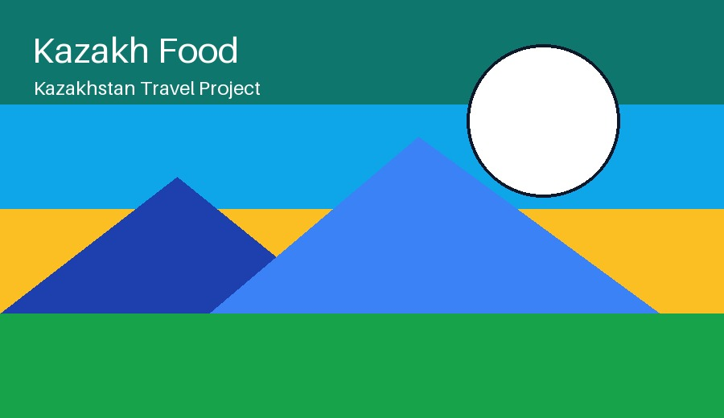
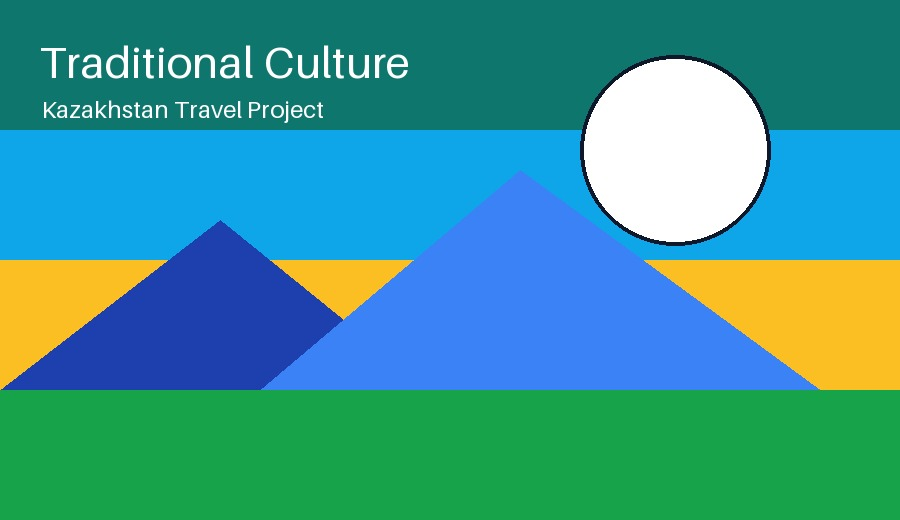

Food
Traditional meals include beshbarmak, baursaks, kurt, and tea.
Travel Kazakhstan
Food, music, and traditions

Traditional meals include beshbarmak, baursaks, kurt, and tea.

Hospitality is an important part of Kazakh culture.
A good travel website should not only show places, but also explain the feeling of the country.
This is a local sound file included in the project folder.
This is a local video file included in the project folder.